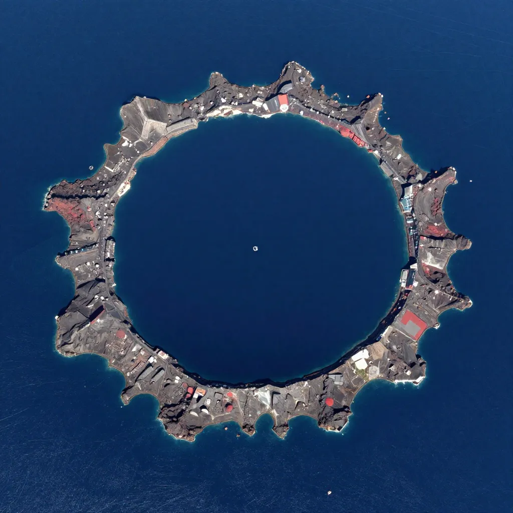
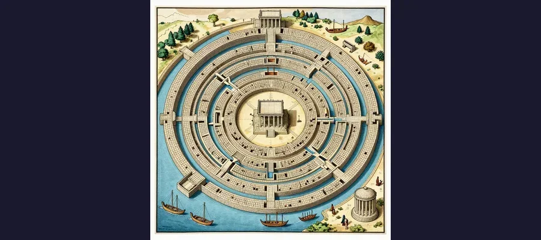

The Lost City of Atlantis: Plato's Ancient Warning About Hubris and Cataclysm

For 2,400 years, the story of Atlantis has captivated humanity. Plato described a magnificent island civilization destroyed by earthquakes and floods — a cautionary tale about hubris that remains one of history's most enduring mysteries.
Somewhere beyond the Pillars of Hercules — the ancient name for the Strait of Gibraltar, where the Mediterranean meets the open Atlantic — there once existed, according to the greatest philosopher of ancient Greece, an island civilization of extraordinary power and beauty. It was larger than Libya and Asia combined. It had concentric rings of land and water, perfectly engineered canals and bridges, a magnificent palace clad in silver and gold, and a temple dedicated to Poseidon that rivaled anything built in the ancient world. Its people were wise, wealthy, and powerful. They commanded a navy of 10,000 chariots and dominated the seas. And then, in "a single day and night of misfortune," earthquakes and floods destroyed the island utterly, sinking it beneath the waves forever. This is the story of Atlantis — as told by Plato in his dialogues Timaeus and Critias, written around 360 BCE. It is the only ancient source for the Atlantis story. Every version, every theory, every film and novel and documentary that has appeared in the 2,400 years since traces back to these two texts. And the question that has haunted Western civilization ever since is the same one Plato posed: was Atlantis real, or was it the most enduring work of fiction ever created?
The Lost City of Atlantis is not just a mystery — it is the mystery, the archetype against which all other lost civilizations are measured. The Library of Alexandria was real and its destruction is documented. The moai of Easter Island stand where their builders left them. The Antikythera Mechanism was recovered from the seafloor. But Atlantis has never been found — because it may never have existed. Yet the search continues, as irresistibly as the tides that supposedly swallowed the island whole. Atlantis has been "located" in the Azores, the Bahamas, Bolivia, Antarctica, Indonesia, the North Sea, and dozens of other places. It has inspired Ignatius Donnelly's 19th-century bestseller, Edgar Cayce's psychic visions, the Theosophical movement, and countless Hollywood films. It has become shorthand for any lost advanced civilization, any golden age destroyed by cataclysm. Plato could not have imagined what he was starting when he sat down to write a philosophical parable about the fall of a corrupt empire. Or perhaps he could. Perhaps that was exactly the point.
Plato's Account: The Only Source
Every detail of the Atlantis story comes from two texts: Plato's Timaeus and Critias, written around 360 BCE. In the Timaeus, Plato describes Atlantis in the context of a larger discussion about the nature of the cosmos and the ideal state. The character Critias recounts a story that he says was passed down through his family from the great Athenian lawgiver Solon, who heard it from Egyptian priests in the city of Sais around 590 BCE. According to Critias, the priests told Solon that Atlantis had existed 9,000 years before Solon's time — placing it around 9600 BCE — and that Athens had defeated the Atlantean empire in war before the gods destroyed Atlantis with earthquakes and floods.
In the Critias dialogue (which is unfinished — Plato apparently never completed it), Plato provides far more detail. He describes the island's geography: a large, fertile plain surrounded by mountains, with the capital city built on a series of concentric rings of land and water, each connected by bridges and canals. At the center stood the palace of the kings and a magnificent temple to Poseidon clad in silver, gold, and ivory. The Atlanteans had hot and cold springs, abundant wildlife, exotic fruits, and vast mineral wealth, including a mysterious metal called orichalcum that "sparkled like fire." They had an army of 10,000 chariots, a vast navy, and an empire that extended across North Africa and Europe. But over generations, the Atlanteans became corrupt and imperialistic. They launched a war of conquest against Athens and its allies — and were defeated. Zeus, angered by Atlantis's hubris, convened a council of the gods and decided to punish the island. Earthquakes and floods destroyed Atlantis in a single day and night. The island sank beneath the sea, leaving only a shoal of mud that made the Atlantic Ocean impassable.
🎲 Allegory or History? The Question That Launched a Thousand Expeditions
The central debate about Atlantis is whether Plato intended his account as literal history or philosophical allegory. Plato himself says through Critias that "this tale, though strange, is certainly true." But Plato also says in The Republic that the ideal state he describes is a thought experiment, not a real place, and many scholars argue that Atlantis serves the same purpose — a cautionary tale about what happens when a civilization becomes corrupt and imperialistic. The clue is in the structure: Atlantis is described as a mirror image of Athens, but corrupted. Where Athens is virtuous and disciplined, Atlantis is decadent and aggressive. Where Athens prevails through courage and wisdom, Atlantis falls through hubris. The destruction of Atlantis is the destruction of every empire that believes itself invincible — a theme as relevant today as it was in 360 BCE. Most classical scholars believe Atlantis was purely fictional, a literary device Plato invented to illustrate his philosophical arguments. But the specific geographical details — the Pillars of Hercules, the size of the island, the concentric rings — have convinced generations of seekers that Plato was describing a real place, much as the precise astronomical details of the Great Sphinx of Giza have convinced researchers that it holds hidden historical truths.

The Santorini caldera as seen from above. When the Thera volcano erupted around 1600 BCE, it created one of the largest explosions in recorded history and may have inspired Plato's account of Atlantis sinking beneath the waves.
The Minoan Connection: History Disguised as Myth?
If Atlantis was based on a real civilization, the strongest candidate by far is the Minoan civilization of Bronze Age Crete. The Minoans were the most advanced civilization in Europe during the second millennium BCE — a maritime powerhouse with a magnificent palace at Knossos, indoor plumbing centuries before the Romans, a vibrant artistic tradition of frescoes and pottery, and a writing system known as Linear A. They dominated trade in the eastern Mediterranean and were known to the Egyptians and the Mycenaeans. And then, around 1600 BCE, disaster struck.
The island of Thera (modern Santorini), approximately 70 miles north of Crete, was the site of one of the largest volcanic eruptions in recorded history. The eruption was approximately 100 times more powerful than the eruption of Mount St. Helens in 1980. It blew the island apart, creating a massive caldera — a collapsed volcanic crater — that is clearly visible from space today. The eruption generated enormous tsunamis that devastated the coast of Crete, destroyed the Minoan fleet, inundated coastal settlements, and may have triggered the collapse of the entire civilization. The parallels with Plato's Atlantis are striking: an advanced island civilization destroyed by a catastrophic natural disaster in a single devastating event. The Minoan palaces have been compared to Plato's description of Atlantis's architecture. The bull-leaping rituals depicted in Minoan frescoes echo Plato's description of Atlantean bull sacrifices. The Theran caldera, viewed from above, resembles the concentric rings of water and land that Plato describes.
The Helike Connection
There is another possible historical inspiration that is often overlooked. In 373 BCE — within Plato's own lifetime — the Greek city of Helike was destroyed by a massive earthquake and tsunami. The city, located on the southern shore of the Gulf of Corinth, sank beneath the waves, its ruins submerged in the sea. The destruction of Helike was a major event in the Greek world, widely discussed and documented. Plato was approximately 54 years old when it happened. It is entirely possible — perhaps even likely — that the destruction of Helike influenced his description of Atlantis's fate: an entire city swallowed by earthquakes and floods "in a single day and night."
🌊 The Thera Eruption: A Catastrophe Visible from Space
The eruption of Thera (Santorini) around 1600 BCE was one of the most violent volcanic events in human history. The explosion ejected approximately 60 cubic kilometers of material into the atmosphere, creating a plume that may have reached 20 miles into the stratosphere. The eruption generated tsunamis with wave heights estimated at 100-500 feet that devastated the coasts of Crete and the eastern Mediterranean. The ash cloud may have caused cooling across the Northern Hemisphere for several years. The resulting caldera, measuring approximately 7 by 4 miles, is one of the most dramatic geological features on Earth — and is now a popular tourist destination. Interestingly, the Thera eruption may also have inspired other ancient myths beyond Atlantis. Some researchers have suggested that the plagues of Egypt described in the Book of Exodus could be linked to the environmental effects of the eruption, and that the "pillar of cloud by day and pillar of fire by night" that guided the Israelites resembles the ash column of a massive volcanic eruption. The Thera event is a reminder that the myths of the ancient world were often rooted in real catastrophes — just as the mysterious Bermuda Triangle may have its origins in real but misunderstood natural phenomena.

Plato described Atlantis as a city of concentric rings of land and water, with a magnificent temple to Poseidon at its center. Whether allegory or history, the image has captivated imaginations for over two millennia.
The Great Atlantis Mania: From Donnelly to Cayce
For most of Western history, Atlantis was treated as what Plato probably intended it to be: a philosophical story. But in 1882, a former United States Congressman named Ignatius Donnelly published Atlantis: The Antediluvian World, and everything changed. Donnelly argued that Atlantis was real, that it had been the cradle of all human civilization, and that its survivors had colonized both sides of the Atlantic after the catastrophe, explaining the similarities between Old World and New World cultures. Donnelly's book was a sensation — it went through 23 printings and launched modern Atlantis mania. His arguments were speculative and often deeply flawed, but they were presented with such conviction and apparent scholarship that they convinced millions.
Donnelly opened the floodgates. In the 20th century, the American psychic Edgar Cayce (1877-1945) claimed to have "seen" Atlantis during his trance readings, describing an advanced civilization with crystal power sources and flying machines that was destroyed in three cataclysms between 50,000 and 10,000 BCE. Cayce predicted that Atlantis would "rise again" in 1968 or 1969 — and when the Bimini Road, an underwater rock formation in the Bahamas, was discovered in 1968, it was hailed by believers as confirmation of Cayce's prophecy. (Geologists later determined the Bimini Road is a natural geological formation.) The Theosophical movement, founded by Helena Blavatsky, incorporated Atlantis as one of several "root races" in its esoteric cosmology. By the late 20th century, Atlantis had become a cultural phenomenon — a blank canvas onto which every fantasy of lost golden ages and suppressed knowledge could be projected.
- The Azores — An underwater plateau in the mid-Atlantic that some argue matches Plato's description of a large island beyond the Pillars of Hercules. However, geological surveys confirm the Azores are volcanic islands, not the remnants of a sunken continent.
- The Bahamas / Bimini Road — The underwater rock formation discovered in 1968 that some claimed was an Atlantean road. Geologists have confirmed it is a natural beachrock formation.
- Antarctica — Authors Rand and Rose Flem-Ath proposed that Atlantis was actually Antarctica, which was displaced to its current polar position by a catastrophic crustal displacement. There is no geological evidence for this theory.
- Bolivia / Altiplano — Researcher Jim Allen argued that the Altiplano, a high-altitude plain in Bolivia, matches Plato's measurements and description. The theory requires ignoring the "beyond the Pillars of Hercules" detail.
- Doggerland (North Sea) — A real landmass that connected Britain to continental Europe during the last ice age before being submerged by rising sea levels around 6500 BCE. While Doggerland was real and its submersion was catastrophic, there is no evidence of an advanced civilization there.
- Santorini / Thera — The strongest candidate. The volcanic caldera matches Plato's concentric rings, the Minoan civilization matches his description of an advanced maritime culture, and the catastrophic destruction matches his account of earthquakes and floods.
🛠 Why Geologists Say Atlantis Can't Exist
Modern seafloor mapping and plate tectonics have effectively ruled out the possibility of a lost continent in the Atlantic Ocean. The theory of plate tectonics, developed in the 1960s, explains the structure of the Earth's crust in terms of large plates that move, collide, and separate over geological time. The Atlantic Ocean is formed by the separation of the North American, South American, European, and African plates. There is no room on any tectonic plate for a lost continent the size of Libya and Asia combined to have existed and then vanished. The seafloor has been extensively mapped by sonar, satellite altimetry, and submersible expeditions. No sunken landmass matching Plato's description has ever been found. The ocean floor of the Atlantic is composed of relatively young basaltic rock, not the continental crust that would be expected if a large landmass had once existed there. Continents do not sink. They are made of relatively light rock that floats on the denser mantle below. A continent the size of Plato's Atlantis could not have sunk beneath the waves in "a single day and night" — or at any other time. The geological evidence is definitive: Atlantis, as Plato described it, never existed. But that doesn't mean his story wasn't inspired by real events — just as the Voynich Manuscript is real even if its language remains undeciphered, and the Copper Scroll describes real treasures that may or may not still exist.
🌊 The Mirror of Our Own Fragility
Atlantis is the most enduring mystery in Western civilization not because it is real, but because it is inevitable. Plato understood something profound about human nature: we are fascinated by the idea of golden ages, lost wisdom, and cataclysmic falls. Every generation sees its own civilization in Atlantis — wealthy, powerful, technologically advanced — and wonders whether the same fate awaits. The Atlantis myth endures because it is not really about the past. It is about the future. It is about the knowledge that civilizations fall. The Minoans fell. The Romans fell. The Maya fell. And one day, perhaps, we will fall too — whether from climate change, nuclear war, pandemic, or some catastrophe we cannot yet imagine. Atlantis is the ghost of every civilization that has ever existed and the shadow of every civilization that will ever exist. Plato, whether he intended it or not, created a myth for the ages — a story so powerful that it has survived 2,400 years and shows no sign of fading. The search for Atlantis will never end, not because there is something to find, but because the search itself is the point. We look for Atlantis because we see ourselves in it. We see our wealth, our power, our achievements — and we see how easily they could be lost. Atlantis is not a lost city. It is a mirror. And what we see reflected in it is the terrifying, beautiful fragility of everything we have built.
Frequently Asked Questions
Did Atlantis really exist?
There is no archaeological or geological evidence that Atlantis existed as Plato described it. Modern seafloor mapping and plate tectonics have ruled out the possibility of a lost continent in the Atlantic Ocean. Most classical scholars believe Atlantis was a philosophical allegory that Plato invented to illustrate his ideas about ideal governance and the dangers of hubris. However, the story may have been inspired by real historical events, particularly the destruction of the Minoan civilization by the Thera eruption around 1600 BCE.
What was Atlantis according to Plato?
According to Plato's dialogues Timaeus and Critias (c. 360 BCE), Atlantis was a powerful island civilization located beyond the Pillars of Hercules (Strait of Gibraltar). It was larger than Libya and Asia combined, had concentric rings of land and water, a temple to Poseidon clad in silver and gold, and an army of 10,000 chariots. Plato says it existed 9,000 years before Solon (c. 9600 BCE) and was destroyed by earthquakes and floods "in a single day and night of misfortune" after its people became corrupt and attempted to conquer Athens.
What is the most likely inspiration for Atlantis?
The Minoan civilization of Bronze Age Crete is the strongest candidate. The Minoans were an advanced maritime culture with a magnificent palace at Knossos, indoor plumbing, and a writing system. Around 1600 BCE, the volcanic island of Thera (Santorini) erupted in one of the largest explosions in history, generating tsunamis that devastated Crete. The concentric caldera of Thera, the advanced civilization, and the catastrophic destruction all parallel Plato's description of Atlantis.
Why do people still search for Atlantis?
Atlantis endures because it taps into a fundamental human fascination with lost golden ages, suppressed knowledge, and cataclysmic falls. It also serves as a mirror for our own civilization's anxieties about collapse. Each generation projects its own fears onto the Atlantis myth — nuclear annihilation during the Cold War, climate change today. The search continues not because the evidence is compelling, but because the story is irresistible.
📖 Recommended Reading
Want to learn more? Check out Atlantis: The Making of Myth by Paul Jordan on Amazon for a deeper dive into this fascinating topic. (As an Amazon Associate, we earn from qualifying purchases.)
References & Further Reading
- Wikipedia: Atlantis — Comprehensive article covering Plato's account, proposed locations, historical inspirations, and modern cultural impact
- Wikipedia: Minoan Eruption — The Thera (Santorini) volcanic eruption c. 1600 BCE that may have inspired the Atlantis myth
- Wikipedia: Minoan Civilization — The advanced Bronze Age culture of Crete that is the strongest historical candidate for inspiring Plato's Atlantis
- Wikipedia: Ignatius Donnelly — The 19th-century author who launched modern Atlantis mania with his 1882 bestseller
- Wikipedia: Plato — The Greek philosopher whose dialogues Timaeus and Critias are the sole ancient source for the Atlantis story
- Wikipedia: Helike — The Greek city destroyed by earthquake and tsunami in 373 BCE, within Plato's lifetime
Editorial note: reconstructions are continuously revised as imaging and inscription studies improve. See our Editorial Policy.